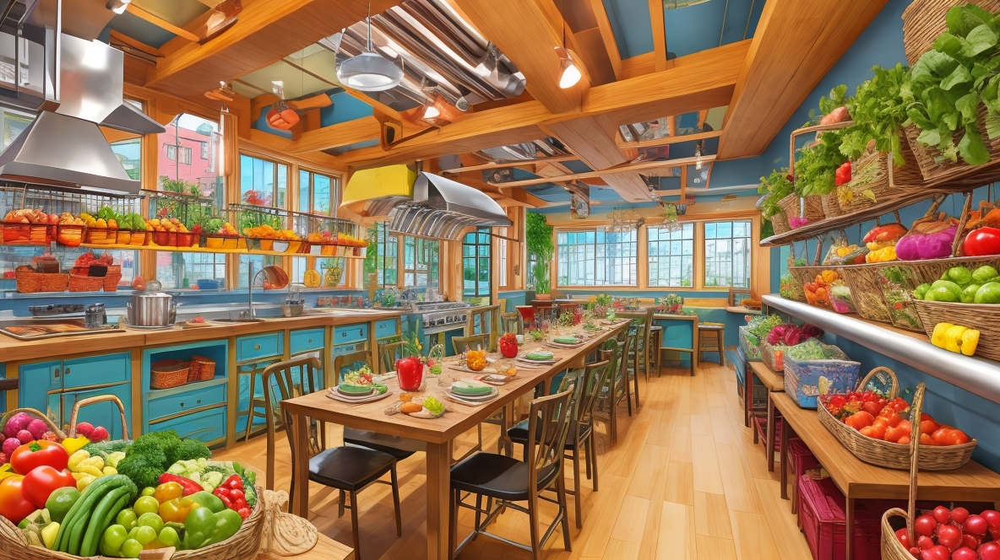
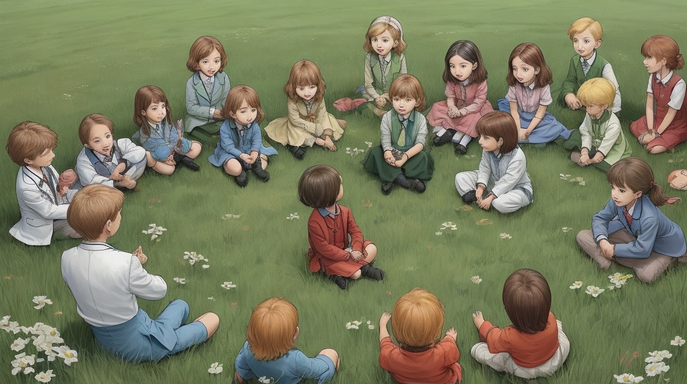
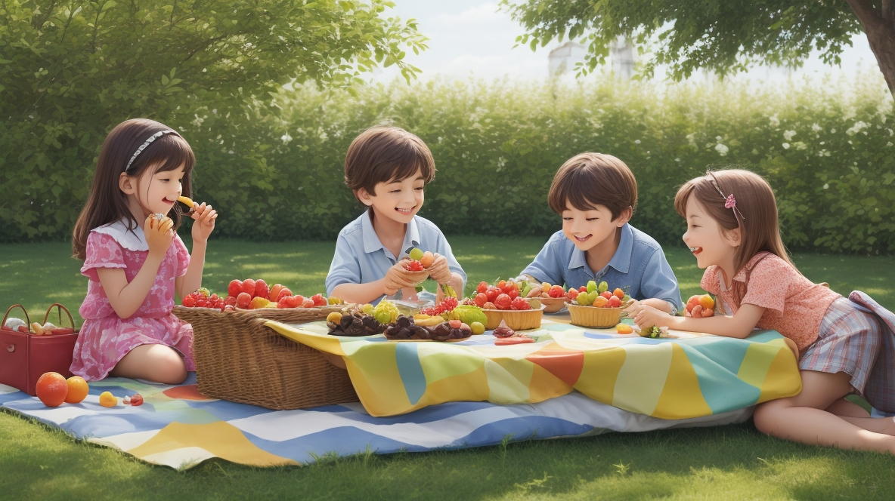

Il était une fois, niché entre des collines et des champs verdoyants, se trouvait un village pittoresque nommé Greenleaf. À Greenleaf, chaque foyer possédait son propre petit jardin où il cultivait un assortiment de légumes et de fruits aux couleurs vives. L’air était toujours rempli du doux parfum des baies mûrissantes et du chant mélodieux des oiseaux. Les habitants de Greenleaf étaient connus partout pour leur bonne santé et leur énergie débordante. Même les aînés et les grands-parents se sont joints à la fête, en faisant du sport et en jouant avec les enfants.


La vie à Greenleaf était simple mais joyeuse jusqu'au jour fatidique où un mystérieux étranger arriva dans le village. D'un coup de baguette, il transforma un vieux coin poussiéreux en un magasin de bonbons magique.
Les enfants de Greenleaf ont été enchantés par les bonbons colorés et les étincelles qui dansaient dans l'air.
Lentement mais sûrement, ils ont commencé à s'adonner aux délices sucrés, échangeant leurs collations saines du jardin contre des bonbons de formes et de teintes variées.
Au fil du temps, les rues autrefois animées de Greenleaf sont devenues silencieuses. Les rires des enfants ont été remplacés par des reniflements et des toux. Le village, autrefois débordant de vitalité, était désormais témoin de longues files d'attente devant l'hôpital, remplies d'enfants malades. Même les plus âgés étaient perplexes face à ce changement soudain.

Les mères inquiètes de Greenleaf se sont réunies, déterminées à ramener la joie et la santé dans leur village. Ils ont rassemblé des paniers de fruits et légumes frais et, avec amour et soin, ils ont concocté de délicieuses friandises comme des gâteaux aux fraises, des guimauves aux baies et d'autres délices sains.

Le médecin du village, sage et gentil, appelle tous les enfants à se rassembler autour d'elle. Avec une douce patience, elle a expliqué les effets nocifs d’une trop grande quantité de sucre et pourquoi la douceur naturelle des fruits était un meilleur choix. Elle leur a appris la différence entre les sucres transformés présents dans les bonbons et les sucres naturels présents dans les fruits, et comment ces derniers nourrissaient leur corps et le maintenaient fort et énergique.

Avec impatience, les enfants ont dégusté les délicieuses friandises préparées par leurs mères. À chaque bouchée, ils redécouvrent le bonheur de manger sainement, l’éclat de saveurs dansant sur leurs langues. Lentement mais sûrement, le village de Greenleaf a retrouvé son ancienne gloire. Les enfants se sont améliorés, leur niveau d’énergie a grimpé en flèche et les rires ont de nouveau rempli l’air.
Ainsi, dans le village de Greenleaf, le magasin de bonbons magiques a disparu dans les brumes des souvenirs, remplacé par la générosité colorée des bonbons de la nature. Chaque jour qui passait, les habitants de Greenleaf vivaient heureux pour toujours, chérissant le cadeau de santé et de bonheur qui fleurissait dans leurs propres jardins.

Vous avez terminé l'histoire!
C'est l'heure du Quiz !